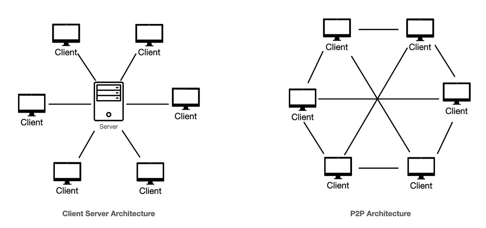

1.1. ARQUITECTURA CLIENTE/SERVIDOR
CONCEPTO.ELEMENTOS.NIVELES
La arquitectura cliente-servidor es un modelo de aplicación distribuida en el que las
tareas se reparten entre los proveedores de recursos (servidores), y los demandantes
(clientes).Transfiere archivos HTML y otros asociados mediante el proptocolo HTTP
| CARACTERÍSTICAS |
| Servicio de página web(HTML y associados) |
Es la unidad basica del modelo, el servidor lo proporciona y el cliente lo consume |
| Recursos ofrecidos |
Documentos HTML, CSS, JS, imagenes,sonidos... |
| HTTP protocolo asimetrico |
Los clientes realizan “peticiones” y los servidores esperan pasivamente y responden a
cada petición. |
| Transparencia |
El cliente no necesita saber donde está físicamente situado el servidor ni el recurso que
desea utilizar. |
| Sistemas débilmente acoplados |
La interacción entre cliente y servidor, está basada únicamente en el envío de mensajes
mediante protocolo HTTP, |

CLIENTE
Programa que solicita el establecimiento de las conexiones con el servidor.Una vez
aceptada, envía una peticion al servidor y espera la respuesta.
Funciones:
- Interactuar con el usuario
- Realizar validaciones locales según la lógica del negocio
- Generar peticiones de información al servidor
- Presentar los resultados renderizados(con formato)
SERVIDOR
Programa que comparte los recursos y servicios que se pueden obtener de una red
Acepta peticiones del cliente, lo procesa y devuelve el resultado.
Debe soportar muchas peticiones de clientes simultaneamente.
El servidor comienza su ejecución antes de interacuar con el cliente y se mantiene después
de terminarla
(daemon).
Funciones:
- Aceptar peticiones de datos de multiples clientes
- Procesar la lógica y realizar validaciones a nivel de BBDD
- Realizar consultas a BBDD
- Generar una respuesta con formato
- Transmitir los datos a los clientes
Ventajas del modelo Cliente/Servidor
- Facilidad mantenimiento y actualizacion
- Seguridad e integración de datos ya que se encuentran "fisicamente" en los servidores. (cortafuegos,IDS,personal)
- Integración entre sistemas diferentes (S.O diferentes)
- Facilmente escalables:
- Escalado Horizontal: Replicación de servidores (cluster)
- Escalado Vertical: Descomponerse en grupos según su función
Desventajas
- Saturación del servidor por elevado número de peticiones (DDOS)
- Paradas por mantenimiento
Capas de la arquitectura Cliente/Servidor
- Capa de Presentación(Interfaz Usuario):
Interacciona con el usuario, presenta los datos y recibe entradas
- Capa de Aplicación/Negocio (lógica de aplicación):
Lógica de la aplicación y aplica reglas de negocio.Se comunica con las otras capas.
- Capa de Datos (almacenamiento y acceso a datos):
Gestión y almacenamiento de los datos
Tipos de arquitecturas cliente/servidor por niveles